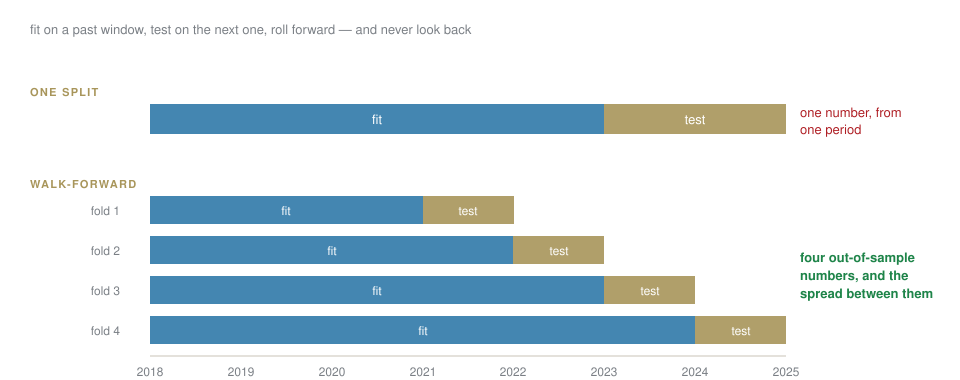

Week 7 · Wednesday 11 November 2026 · 10:00–13:00
AI for Business and FinTech · European School of Economics, Florence
A backtest is the easiest thing in this course to build and the easiest to get wrong. You will build one in six steps, then break it four ways.
Bet before we start
You will see a strategy with a Sharpe ratio of 5. What is the single most likely explanation?
A bug. Hold that thought for forty minutes.
Accuracy on rare events is meaningless: 99.5% can catch nothing. Precision and recall trade off, and the threshold is a business decision.
A rejection needs a reason, by law; removing the protected field does not remove the bias.
Two definitions of fair cannot both hold — someone chooses, and writes down why.
Your capstone: a question whose data you have already loaded.
| 1 | signal — computed from data known at the close of day t |
| 2 | position — held from day t+1 ⟵ signal.shift(1) |
| 3 | returns — position × the return it actually earned |
| 4 | costs — subtracted on every change of position |
| 5 | equity — the cumulative product |
| 6 | statistics — Sharpe, drawdown, turnover |
Step 2 is the whole session. Everything else is arithmetic.
LAB · session.ipynb § B
Momentum, vectorised, with costs. Six lines of pandas and a chart.
Then read the Sharpe ratio out loud, and be suspicious of it.
The same data, one missing shift(1).
You take today’s index members and run them back ten years.
Everything that failed is missing. The firms that went bankrupt were never in your universe, so your strategy never held them. The result is a portfolio of survivors, which was not available to anyone at the time.
The test: does your universe come from a list that was true on each date, or from a list that is true today?
Test enough parameters and one of them looks brilliant by chance.
\text{expected best Sharpe from } N \text{ tries} \;\approx\; \frac{\sqrt{2\ln N}}{\sqrt{\text{years}}}
Twenty tries over five years: about 1.1, from pure noise. So a Sharpe of 1.2 after twenty attempts is not evidence of anything.
Count your attempts, and report the number next to the result.

2017 and 2022 were different worlds. An average over both describes neither.
Split the equity curve by period and show each. If the whole result came from one eighteen-month stretch, say so — that is the finding, not a footnote.
LAB · session.ipynb § C
shift(1). Record the Sharpe.Keep all four numbers. The pitfall checklist in your homework is this, filled in.
You have a language model. Score the news, trade the sentiment.
Bet before we build
What is the look-ahead risk that is unique to news, and does not exist for prices?
Timestamps. A headline about Monday’s crash was published Monday evening, or revised Tuesday, or carries the date of the event rather than the date of publication.
Date every feature by when it was readable, never by what it is about. In news data this is the default mistake, not an edge case.
LAB · session.ipynb § D
Add one LLM-derived feature to the backtest.
The firm’s answer to “what if the model is wrong?”
| inventory | every model, with a named owner |
| validation | someone who did not build it, checking it |
| monitoring | inputs and outputs watched for drift |
| kill-switch | who stops it, how fast, and whether that has been tested |
The last clause is the one that is usually missing. An untested kill-switch is a diagram.
Homework 7 — one strategy, backtested with costs and walk-forward validation, a completed pitfall checklist, and one LLM-derived feature tested against the baseline.
Due Tuesday 17 November, 23:59. No live trading. Educational simulation only.
AI for Business & FinTech · ESE Florence